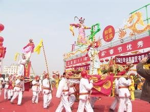

花鼓子，陕南一带的民谣，在安康、旬阳等地区较为流行。分为花鼓子，多在新人嫁娶、祝寿时表达祝福，营造当时的喜庆氛围。丧鼓子，多在丧白喜事时奏唱，以述说逝者生前故事，表达悲伤之情，营造当时的悲伤氛围。
安康，天下分九州时归梁州。殷商之际，武王伐纣，巴庸派师参战。晋·常璩《华阳国志》载“巴师勇锐，歌舞以凌殷人”（成都出版社2007版《华阳国志》校注第4页）。
汉初刘邦王汉水给安康一带又带来新的人群和演唱方式。至南北朝时，安康又产生了《伯鲧治水歌》：“天上无玉皇兮，地下无龙王兮，我就是玉皇兮，我就是玉皇兮。喝令三山五岳开道，我来兮”。此歌谣在20世纪50年代修安康“八一水库”时，经民间艺人传唱，被选为新中国十大新民谣之首，并进入20世纪70—80年代中小学语文教材。
唐宋时期，安康文化大繁荣，孟浩然、岑参、韩愈、白居易、陆游、姚合等先后途经或居安康，吟山诵水，抒怀寄人，使安康的民间吟唱极大繁荣。给后来产生安康的代表戏剧“汉剧”培育了肥沃的土壤。“汉剧”是明代中晚期产生于安康的艺苑奇葩，但艺术难度大，一般百姓难以学唱担演，故民间“俗曲俚唱”成为乡野村夫们的“精神食粮”。
花鼓子（安康花鼓子）是安康本地喜庆祝福、自娱自乐最为广泛、经济的表演形式。是安康民歌中最常见、流传面最广、普及率最高的一种民俗歌谣。故有人称它是“三六九赶场，见客发货”。它的一个最显著的特点是：花鼓子在安康地区的曲式结构、旋律线相同，但其发音腔调各有不同。花鼓子在安康地区南起镇坪，北至宁陕，东自白河，西到石泉，当地的百姓艺人们都在唱着同一首花鼓子，却用自己别样的腔调抒发各自的千百种情怀。